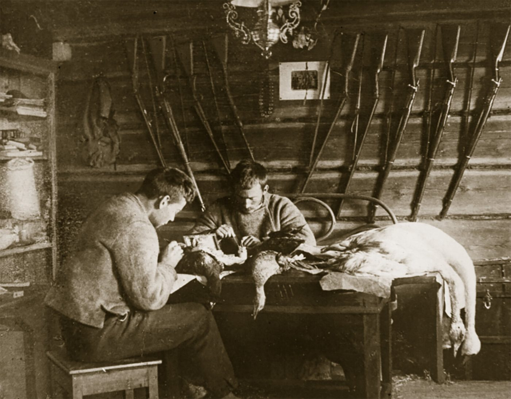
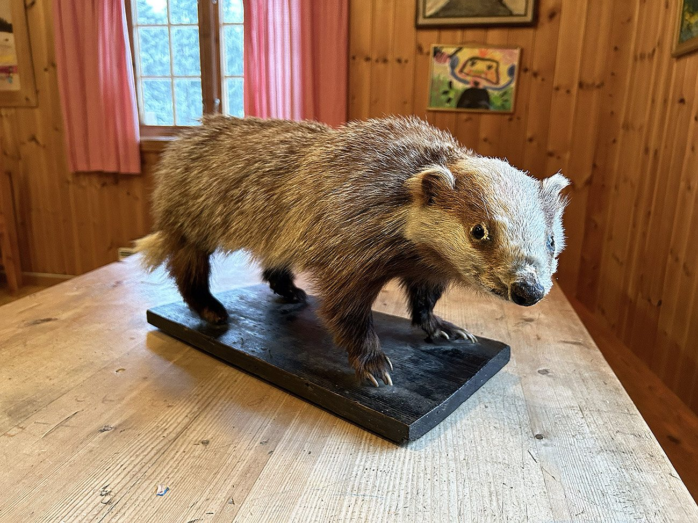
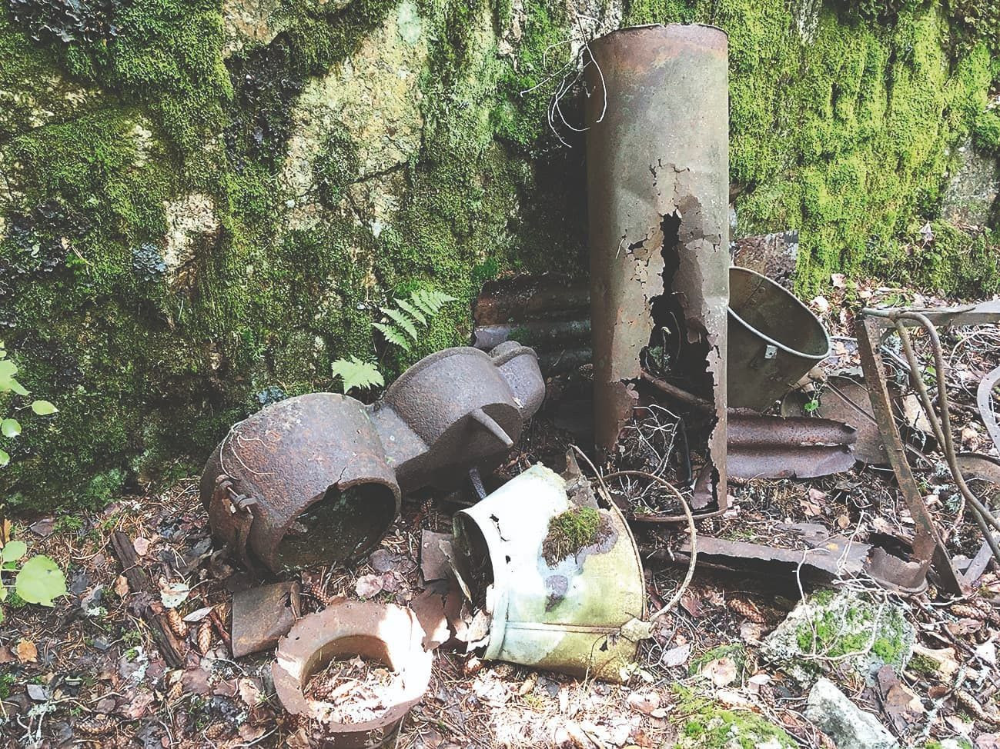
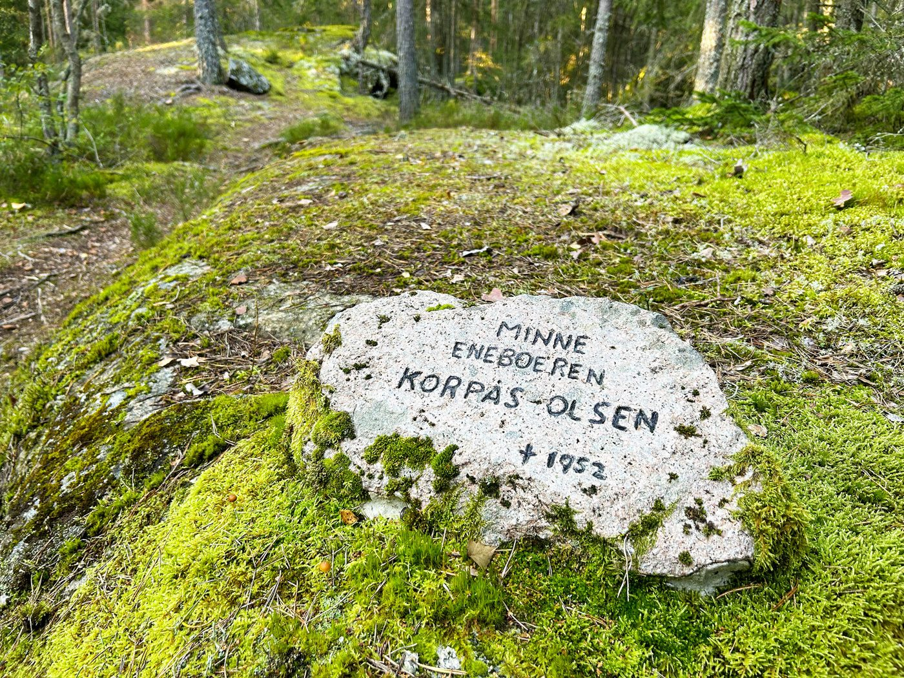
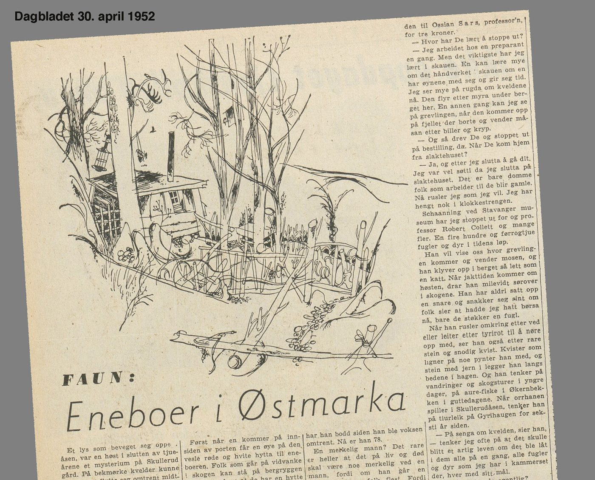

Korpås-Olsen: Eneboer og preparant i Østmarka
Olaf Olsen (1874-1952) gikk under navnet Korpås-Olsen og hadde sin anonyme tilværelse ikke mange hundre meter fra der mengder av hovedstadens turfolk nå legger sin søndags-tur. Naturfotograf Sverre M. Fjelstad så på Olsen som sin læremester og Kjell Aukrust tegnet en herlig skisse av hytta til Olsen i 1952.

Bare noen kilometer fra dagens T-banestasjon Skullerud, øst for Oslo, slo Olaf Olsen seg ned på 1930-tallet. I sin enkle, selvbygde hytte på bare noen få kvadratmeter, bodde han og hadde sitt lille verksted hvor han drev som preparant – han stoppet ut dyr. «Råvarer» til dette hadde han rett utafor hyttedøra.
Folk som besøkte ham i hytta beskrev den som et zoologisk museum. Her var det utstoppede dyr i alle kriker og kroker. Beinraden av en tigerpyton hang over
senga til eneboeren, og ellers var hytta dekorert med både harer, ekorn og en
rekke større og mindre fugler. Kranier og skjeletter sto på rekke og rad på hyllene og i en krok bak en stubbe tittet en livaktig rev fram. Et elghode med et digert gevir gjorde nytte som både utsmykning og stumtjener. Ingen kunne være i tvil om Olsens store lidenskap!

Fjeldstads venn og læremester
– Hvis jeg kan kalles Naturmagasinets far, må Korpås-Olsen regnes som Naturmagasinets bestefar, sa Sverre M. Fjelstad (1930 – 2024) en gang. Lenge før han startet med TV-programmer og bokskriving, hadde han god kontakt med denne særegne eneboeren i Østmarka.
I Fjelstads bok Østmarka naturreservat – Oslos siste villmark er et helt kapittel viet eneboeren. Fjelstad skriver under overskriften «Venn og læremester»:
«Korpås-Olsen var liten av vekst, men med en egen smidighet som er karakteristisk for den som lever i skogen året rundt. Korpås-Olsen hadde også en egen, nesten uforklarlig evne til å gå i ett med omgivelsene – flere ganger fortalte han meg om ville dyr som nesten hadde hoppet opp i fanget hans når han satt urørlig inne i skogen. Jeg gjetter på at dyrene av og til tok ham for en gammel stubbe eller en stor, grå stein der han satt med sine gamle velbrukte vadmelsklær av grå-grønn farge.»
Mens Fjelstad var mest opptatt av å «fange» dyr med sitt kamera, var Olsen mest opptatt av å skyte dyrene for å få materiale å stoppe ut. Fjelstad fortalte at han fungerte som Korpås-Olsens fuglehund! Han måtte hente fuglene som ble skutt, og flere ganger resulterte det i både vassing i våte myrer og også svømmeturer i kaldt vann. Naturfotografen fikk også se hvordan eneboeren kunne mate tiuren med bjerkeskudd rett fra hånda.
Fjelstad beskriver eneboerens bolig slik: «Selv minnes jeg hytta som både lun og koselig, og fremfor alt utrolig spennende. Også hyttas eier forekom meg å være svært så spennende.» Det var faren til Sverre som viste ham veien første gangen. Det var i 1941, Fjelstad var da 12 år og et livslangt vennskap ble etablert. Den unge og etter hvert så kjente naturfotografen hadde blant annet en fast runde innom eneboeren på formiddagen på julaften med litt godsaker fra morens kjøkken.
Fra huleboer til enkelt hytteliv
Mannen som skulle bli eneboer og original i Østmarka var født 16. mai 1874. Familien bodde på Grønland i Oslo. Faren Peder var fra Romedal i Hedmark,
mens moren Sørine Amalie var fra Kristiania. Faren var utdannet baker.
Allerede i 1899 var Olaf ført opp i byens adressebøker med yrke preparant. Han flyttet til skogs en gang på 1920-tallet.
Først bodde han i en enkel hule ved foten av den bratte Skullerudåsen, den delen av
åsen som kalles Korpåsen. Her hadde han tilhold noen somre før han flyttet til en mer permanent hytte litt lenger sør i åsen. Der hadde han fått tillatelse av kommunen til å føre opp den lille hytta som ble hans bolig livet ut.
Hytta var ikke lett å finne den gangen Olsen bodde der, og restene etter den er ikke lette å finne i dag. Den noe sky eneboeren var mest opptatt av at hytta ikke skulle bli oppdaget av andre – han ville ikke ha noe renn av nysgjerrige turfolk innom.

Besøk fra nabolaget
Det var ikke bare Fjelstad som besøkte Olsen og nå i ettertid kan berette om eneboerens liv. Også sønnen på den nærliggende Skullerud gård, Ole Opsahl, hadde sine turer til skogsmannen. Ole hadde ofte med seg mat fra morens kjøkken, og da var den unge gjestens besøk særlig populært! Abildsø skole hvor Ole var elev, hadde flere ganger skoleturer til preparanten i hytta. – Det var spennende for skoleelevene å se de mange dyrene og den snodige eneboeren, kunne Ole fortelle.
Korpås-Olsen havnet en gang på Aker sykehus med lungebetennelse. To av de få han hadde jevnlig kontakt med var Narve Opsahl, Oles far, og skogsbestyrer Ole Messelt i Aker kommune. Disse to besøkte Olsen på sykehuset, og da visitten var over og de to besøkende var på vei til å gå, grep eneboeren fatt i Opsahl og hvisket: «Få
meg ut herfra! Her skifter dem sengetøy hver eneste dag!»
En annen som var på besøk i Korpås-Olsens hytte, var lege, friluftsmann og forfatter Paul Bukier (1875 – 1957). I boka På Asbjørnsens stier som kom ut i 1937 er det et kapittel som heter «En eremitt». Han beskriver turen inn
til eneboerens hytte slik:
«Fra den opptråkkede søndagssti tok der av et enslig fotefar efter en mand. Det valgte jeg instinktmessig å gå efter; det måtte føre frem, tenkte jeg, da kursen forekom meg den rette. Som en hund fulgte jeg sporet. Men snart begynte det å falle noget mærkelig. Det bar mot åsen og opp i det rene ulende, på tvers av all rimelighet, på de mest vriene steder, i siksak hit og dit. Jeg holdt nesten på å gi opp. Men så bar det nedover igjen, utfor en bergknatt hvor jeg måtte ta mig frem på alle fire. Og så bar det atter oppover. Om den som hadde gått der hadde hatt en mistanke om at han muligens ville bli eftersett og derfor ønsket å uttrette sin forfølger, kunne han ikke ha valgt en mer fordektig rute. Tilsist kom jeg til et stikryss der det gikk spor i forskjellige retninger. Her var det altså intet andet å gjøre enn å gå systematisk tilverks. Først forsøkte jeg et spor. Nei, det førte rett opp på åsen. Så valgte jeg et andet spor. Det førte bare bort på en sterkt opptråkket sti. Så slo jeg ind i en retning der intet spor var. Og der hadde jeg ikke gått mange skritt før jeg hørte noen snakke og oppdaget at det kom fra en forsenkning mellom to bergknatter. Der fikk jeg øie på huset. Det lå så ualmindelig listig til, at det var umulig å oppdage før en var kloss innpå.»

Preparant
Som utstopper gikk han for å være en
dyktig fagmann. Han hadde i yngre alder vært ansatt hos en preparant og lærte faget der. Ofte kunne han sitte utenfor hytta ved Skullerudåsen med sitt arbeid. Med ryggen mot en furustamme og med kniv, nål og tråd innen rekkevidde fikk han nytt liv i de døde dyrene. De ferdige produktene ble blant annet levert til Zoologisk museum på Tøyen. Han hadde også bestillinger fra Stavanger museum, og han hadde kontakt med ornitolog Hans T. L. Schaanning og professor Robert Collett ved de to museene.
Etter Olsens død ble de utstoppede dyrene i hytta overtatt av Abildsø skole. Elever fra skolen gikk i flokk og følge med de mange eksemplarene. Dyrene sto lenge på skolens naturfagrom til glede for elever og lærere, men ble fjernet i forbindelse med
oppussing tidlig på 2000-tallet.
En utstoppet grevling er sannsynligvis den eneste gjenværende fra Olsens samling. Den står på Sagstua ved Skullerud, en hytte eid av Oslo kommune som Miljøprosjekt Ljanselva disponerer.
I tillegg til å jobbe som preparant, hadde Olsen i perioder jobb som hjelpemann på slakteriet på Grønland. Til sin arbeidsplass i Oslo sentrum gikk han – en tur på 10 – 12 kilometer. Hjem om ettermiddagen tok han gjerne Enebakkbussen til Skulleruddumpa, særlig hvis han hadde fått seg noen drammer etter arbeidstid, noe mannen var svak for.


Det siste
Korpås-Olsen døde høsten 1952. Det var Fjelstad som fant ham ved bekken like sørøst for hytta en kald novemberdag. Han ble gravlagt på Nordstrand kirkegård. Graven er nå slettet.
Like sørvest for hytta ble det i 2000 satt opp et enkelt minnesmerke, en stein med innskriften: «Korpås-Olsens minne, † 1952». På Østmarkakartet (1:25.000) er stedet for hytta tegnet inn med ruin-symbol (fire prikker) og teksten «Korpås-Olsen».
I dag kan man finne rester av en ovn og et ovnsrør, et rustent melkespann samt jernramma til en seng på stedet.

er alt som i dag finnes der Korpås-Olsens hytte en gang sto. Foto: Even Saugstad.

Aukrust på tegneoppdrag
Bare noen måneder før Olsen døde, hadde han besøk av tegneren Kjell Aukrust (1920 – 2002) i sin hytte. Han var på oppdrag for Dagbladet sammen med journalist Jon Dørsjø. Besøket resulterte i en helsides artikkel med to flotte tegninger i Dagbladet 30. april 1952.
Å tegne Korpås-Olsen fikk Aukrust imidlertid ikke lov til. Da han fant fram skisseblokka, forsvant eneboeren inn i hytta. I artikkelen kan vi lese: «Han sitter
på senga og vil ikke ut i lyset før vi har lovet dyrt og hellig. Tegn ellers hva som helst, den vesle hytta i sprekken i fjellet, hagen og porten og trærne omkring. Kom gjerne inn og tegn at det er en meter og seksti under taket, at det her er en kongeørn og et pinnsvin og en rødrev, en askefarget orrhane og hundre andre utstoppede dyr i et ørlite kammers aller innerst.»
Journalisten spør Olsen om det ikke er ensomt å bo slik? Olsen svarer ikke, forstår ikke spørsmålet. Journalisten prøver seg igjen:
– Men kommer det da aldri folk? Orienteringsløpere?
– Ikke orienteringsløpere. De oppdager aldri noen ting. Bare flyr blindt forbi med tunga ut av halsen. En skal se seg om i skogen mens en er ung, og ikke fly helsa av seg, var eneboerens svar.
I reportasjen kan vi videre lese: «Ikke det at han har noe imot folk, men han trives så tindrende godt alene. Her trasker en
ganske liten mann halvannen mil ut av byen for å leve i all stillferdighet i skogen. Da kan det være like godt å ha dagen for seg selv.»

En av mange
Olaf Olsen var bare en av mange som fristet tilværelsen i enkle buer og hytter i skogområdene rundt hovedstaden i første halvdel av 1900-tallet. Grunnene for at disse mennene (for det var særlig menn!) flyttet til skogs kan ha vært mange. Noen ganger var ønsket om et liv skjermet fra andre mennesker knyttet til rus
eller psykiatri. I noen tilfeller var det bare ønsket om å komme vekk fra en bråkete by og lengselen etter det frie liv i skogen. Ofte var det jakt- og fiskedrømmen fra ungdomsårene som kunne føre til et liv i utkanten av sivilisasjonen. Det var også boligmangel, særlig etter krigen, som tvang folk til enkle boliger i marka.
Som med by- og bygdeoriginalene gikk det ofte mer eller mindre sanne historier om disse eneboerne. Og de fikk ofte kallenavn. I Oslomarka kunne man blant annet finne Banner-Ola, Greven av Oppkuven, Næs-brødrene, Fjellseternissen og Grønbergkarene. Dette er blant personene som er portrettert i den gjennomillustrerte boka «Folk og røvere i Oslomarka som kom ut i 2023 på Frie Fuglers Forlag. Mer om den her: www.friefuglersforlag.no
Denne teksten er skrevet av Even Saugstad og artikkelen har tidligere stått i bladet Villmarksliv.
Kilder
Bøker:
Paul Bukier: Paa Asbjørnsens stier. Gyldendal forlag, 1937
Sverre M. Fjelstad: Oslos siste villmark. Schibsted forlag, 1994
Even Saugstad: Østmarka fra A til Å. Frie Fuglers Forlag, 2022
Sigurd Senje: Østmarka. Gyldendal forlag, 1974
Artikler:
Aftenposten 26.03.1955, artikkel av Sverre M.
Fjelstad
Dagbladet 30.04.1952. Artikkel av Jon Dørsjø
Muntlige:
Sverre M. Fjelstad, forfatter
Ole Opsahl, Skullerud gård